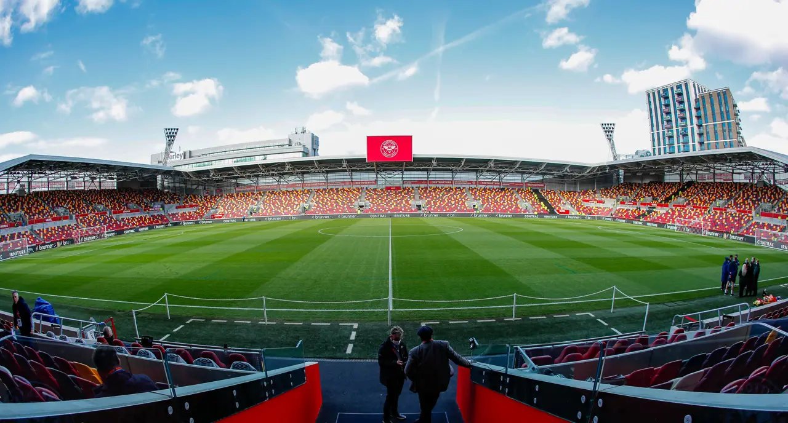

Brentford Football Club is a professional association football club based in Brentford, West London, England. The team competes in the Premier League, the top tier of English football. Nicknamed "The Bees", the club was founded in 1889 and played home matches at Griffin Park from 1904 before moving to the Brentford Community Stadium in 2020.
Brentford initially played amateur football before they entered the London League in 1896 and finished as runners-up of the Second Division and then the First Division to win election into the Southern League in 1898. They won the Southern League Second Division in 1900–01 and were elected into the Football League in 1920. Brentford won the Third Division South title in 1932–33 and the Second Division title in 1934–35. The club enjoyed a successful spell in the top flight of English football, reaching a peak of fifth in the First Division, in 1935–36, their highest ever league finish, before three relegations left them in the Fourth Division by 1962. They were crowned Fourth Division champions in 1962–63, but were relegated in 1966 and again in 1973 after gaining promotion in 1971–72. Brentford spent 14 seasons in the Third Division after gaining promotion in 1977–78 and went on to win the Third Division title in 1991–92, though were relegated again in 1993.
Brentford were relegated into the fourth tier in 1998 and won promotion as champions in the 1998–99 campaign. The club were relegated in 2007 and won promotion as champions of League Two in 2008–09 and then were promoted out of League One in 2013–14. They had unsuccessful Championship play-off campaigns in 2015 and 2020. Brentford have a poor record in finals, finishing as runners-up in three Associate Members' Cup/Football League Trophy finals (1985, 2001 and 2011) and losing four play-off finals (the 1997 Second Division final, 2002 Second Division final, 2013 League One final and 2020 Championship final). However, Brentford won the 2021 Championship final to be promoted to the highest level for the first time since the 1946–47 season. Their main rivals are fellow West London-based clubs Fulham and Queens Park Rangers. They are affiliated with the women's club Brentford Women.
List Content
History
1889–1920: Formation and early years
In 1889, the town of Brentford, Middlesex was home to the Brentford Rowing Club and Boston Park Cricket Club. Attempts to form football and rugby clubs in the town fell by the wayside until a new recreation ground was opened on 17 October 1889. Seven days earlier, a meeting had taken place at the Oxford & Cambridge pub near Kew Bridge, during which it had been endeavoured between the rowing and cricket club members to decide how best to use the recreation ground. On 16 October 1889, the rowing club members again met at the Oxford & Cambridge pub and it was voted that the new club would play association football, be named "Brentford Football Club".
On 26 October 1889, the club staged its first practice match and on 23 November the club's first competitive match was played versus Kew, which resulted in a 1–1 draw. The 1892–93 season saw Brentford enter a league for the first time — the West London Alliance. The 1894–95 season was when Brentford first got their nickname, The Bees. A group of people from Borough Road College had come to a match to support their friend Joseph Gettins who was playing for Brentford at the time. They shouted their school chant, 'Buck up Bs!' but it was misheard by the media as 'Buck up bees!', and the name stuck.
Brentford continued to largely play cup and friendly matches until 1896, when the club was elected into the Second Division of the London League. The Bees finished second to secure promotion to the First Division. Brentford's London League exploits and its establishment as one of the top amateur clubs in London led to the club's election into the Second Division (London section) of the Southern League for the 1898–99 season. The club became a professional outfit in the 1899–1900 season and won a place in the top-flight in July 1901 after Gravesend United dropped out of the Southern League.
Brentford moved to Griffin Park, its first permanent home, in time for the beginning of the 1904–05 season. The Bees reached the FA Cup first round proper for the first time in 1905–06, advancing to the third round before succumbing to Liverpool at Anfield. Despite an initial upturn in form, 9 defeats in the final 11 matches of 1912–13 led to Brentford's relegation after an 11-season stay in the First Division.
In July 1915, the Southern League cancelled its competition for the duration of the First World War. Brentford competed in the London Combination during the War. The squad was decimated by the call-up of players for service or war work. Brentford won the London Combination title in 1918–19, four points ahead of nearest challengers Arsenal. Brentford turned down the opportunity to apply for election to the Football League for the 1919–20 season and instead applied for election to the First Division of the Southern League, which was awarded, finishing 15th.
1920–1954: Establishment in the Football League and glory years
In May 1920, Brentford and 20 other Southern League First Division clubs were elected into the Football League as founder members of the Third Division for the 1920–21 season. 11 new players were signed and the Bees' first-ever Football League match took place on 28 August 1920 at Exeter City's St James Park, which resulted in a 3–0 defeat. Despite 18 goals from Harry King, a lack of goals from elsewhere in the side led Brentford to a 21st-place finish, but the club were re-elected into the league without going to a poll.
It was all change at Griffin Park during the 1926 off-season, with former Gillingham boss Harry Curtis being installed as manager. Just 9 members of the previous season's squad were retained, but despite mid-table finishes over the following three seasons, Curtis slowly rebuilt the squad. The 1929–30 Third Division South season provided the foundation for the Bees' future success, however, the club missed out on promotion to Plymouth Argyle. The Bees romped to the 1932–33 Third Division South title, with Jack Holliday scoring a club-record 39 goals.
After topping the table for the third time in the 1934–35 season on 2 March 1935, the Bees would not again relinquish top spot, cruising to the title and promotion to the First Division for the first time in the club's history. Brentford also completed a unique double by winning the London Challenge Cup. After having risen from the third-tier to the first in the space of just three seasons, manager Harry Curtis elected to keep his squad intact for the 1935–36 First Division season. An extension to the New Road terrace increased Griffin Park's capacity to 40,000, which would generate extra income. After 15 matches, Brentford looked certain to be relegated, however, the club completed a remarkable turnaround, with the Bees losing just two of the final 23 matches and finishing in the club's all-time-highest position of 5th. Brentford again performed above expectations during the 1936–37 and 1937–38 seasons, finishing 6th in each campaign and reaching the FA Cup sixth round for the first time in the latter. The club reached its zenith between October 1937 and February 1938, holding onto top spot in the First Division for 17 consecutive matches.
The 1938–39 season was the beginning of the end of Brentford's peak narrowly avoiding relegation. The 1939–40 season lasted just three matches before World War Two brought about the suspension of competitive football. Brentford competed in the Football League South and the London War League during the war years, with much of the team supplemented by guests and young amateurs, though the core of the pre-war team continued to play in the majority of the club's matches. On 30 May 1942, the Bees earned a 2–0 victory over Portsmouth in the London War Cup final at Wembley Stadium.
Brentford's 1946–47 squad, for the first competitive season after the Second World War, was propped up by the ageing core of the 1939–40 pre-war squad which would lead to the Bees' relegation from the First Division. After narrowly avoiding a second successive relegation in 1947–48, manager Harry Curtis announced that the 1948–49 season would be his last in the job after nearly 23 years. The season ended with a poor 18th-place finish, though notably the FA Cup sixth round fixture at home to Leicester City set a new club-record attendance of 38,678. In 1953–54 Brentford's relegation to the Third Division South was confirmed on the final day of the season after a 3–1 defeat to Leicester City at Griffin Park.
1954–1986: Decline and financial difficulties
Relegation to the Third Division South at the end of the 1953–54 season meant that 1954–55 would be Brentford's first in the bottom-tier for 21 years. After three consecutive top-six finishes, the rot set in during the 1960–61 season, with the poor form on the field mirrored by the news from the boardroom of debts of £50,000 (equivalent to £1,405,800 in 2025).
After the sale of several key players, the Bees finished second-from-bottom of the 1961–62 Third Division and were relegated, starting several yo-yo years between the Third and Fourth divisions. Despite winning just seven of the final 14 matches of the season, Brentford finished 1962–63 as Fourth Division champions. However, in 1965–66, Billy Gray couldn't prevent relegation to the Fourth Division. In December 1966, it was revealed by chairman Dunnett at Brentford's AGM that the club had lost £20,000 during the previous financial year and that he would be selling his stake in the club. Earlier that month, there had been an approach from neighbours QPR, suggesting that the two clubs share Griffin Park. On 19 January 1967, the news broke that Dunnett and his QPR counterpart Jim Gregory had reached an agreement that Brentford's rivals would move into Griffin Park, Rangers' ground Loftus Road would be redeveloped as housing and Brentford, as a club, would cease to exist.
After a tense month of fan protests, negotiations and donations amounting to £8,500 (equivalent to £194,900 in 2025), a six-man syndicate headed by former Plymouth Argyle chairman Ron Blindell took over Dunnett's shares on 23 February 1967 and guaranteed a 12-month bridging loan of £104,000. The following day, Blindell, as chairman, took control of the club. It transpired that QPR chairman Jim Gregory had resurrected his interest in Griffin Park and offered £250,000 for the use of the ground, a fee that would wipe out Brentford's £135,000 debt instantly, if the club moved to Hillingdon. The name "Brentford Borough FC" had already been chosen for the new Hillingdon-based club, but once again Brentford was saved at the eleventh hour, with former director Walter Wheatley granting the club a £69,000 interest-free loan, repayable in 12 months.
Under Frank Blunstone, Brentford secured promotion back to the Third Division with two matches of the season remaining. However, the Bees were relegated on the final day of the 1972–73 season. After a period of consolidation, Bill Dodgin Jr. led Brentford to a 4th-place finish and promotion to the Third Division in the 1977–78 season. Brentford reached its first major competitive cup final in the 1984–85 season, but lost 3–1 against Wigan Athletic in the 1985 Football League Trophy final at Wembley Stadium. In the 1988–89 season, the Bees' reached the sixth round of the FA Cup, which ended after a 4–0 defeat to Liverpool at Anfield.
1986–2014
In 1991–92, six wins from the six final matches saw Brentford recover to win the Third Division championship on the final day and secure second-tier football for the first time since the 1953–54 season. However, Brentford returned immediately to the third tier. In 1996–97, Brentford missed out on promotion, losing the play-off final against Crewe Alexandra. In the 1997–98 season, Brentford were relegated to the Third Division on the final day of the season.
In June 1998, former Crystal Palace chairman Ron Noades assumed ownership of Brentford and made wholesale changes throughout the club, installing himself as chairman-manager. The Bees won the 1998–99 Third Division championship on the final day, after beating Cambridge United 1–0 in a "winner takes all" match at the Abbey Stadium. Brentford reached the 2001 Football League Trophy final, but were defeated 2–1 by Port Vale. At the end of the 2001–02 season, Brentford narrowly missed out on automatic promotion on the final day to Reading. The Bees could only manage a draw in a must win match, before later losing the 2002 play-off final, to Stoke City, 2–0.
In the wake of the ITV Digital collapse, the financial restraints placed on the club by Noades left new manager Wally Downes with an inexperienced squad and administration was narrowly avoided in August 2002. Noades quit the club and handed control to supporters' trust Bees United. Brentford narrowly avoided relegation at the end of the 2003–04 season. In both 2004–05 and 2005–06, Brentford reached the FA Cup fifth round and the play-off semi-finals. In 2006, Matthew Benham made his first interaction with Brentford, donating £500,000. He was anonymous and was known as the 'Mysterious Investor'. Despite a good start to the 2006–07 season, Brentford's relegation was confirmed on 9 April 2007, eventually finishing bottom of the league. Despite the relegation, the club's finances had been improved after Matthew Benham paid nearly £3 million to take over some of the club's debts in January 2007.
In July 2009, Benham and Bees United made a deal under the codename 'Gecko' in which he agreed to give £1m every year for 5 years, in return for increasing his equity to 35% and have an option to become the owner of Brentford by 2014. Under Andy Scott, the Bees won the League Two title after victory in the penultimate match of the 2009–10 season. 2010–11 became memorable for Brentford's cup exploits, going on a run to the fourth round of the League Cup and reaching the 2011 Football League Trophy final, which was lost 1–0 to Carlisle United. In June 2012, Benham fully bought the club from Bees United. However, Bees United still keep a place on the club board. Brentford came within a penalty kick of automatic promotion to the Championship on the final day of the 2012–13 season, losing 1–0 to promotion rivals Doncaster Rovers at Griffin Park, who only needed a draw to secure automatic promotion. The Bees would eventually lose to Yeovil Town in the play-off final. Despite a poor start to the season, Mark Warburton led the Bees to automatic promotion to the Championship in 2014.
2014–present: Rise to the Premier League
In their first season in the second tier since 1993, Brentford finished 5th but lost to Middlesbrough in the play-off semi-finals. Under Dean Smith, Brentford became an established Championship side. Smith's successor, Thomas Frank, took Brentford to the 2020 Championship play-off final after finishing third in the league, but lost 2–1 to West London rivals Fulham. During the 2020 off-season, the club moved out of Griffin Park (its home ground for 116 years) and into the Brentford Community Stadium, a 17,250-capacity all-seater stadium. Brentford repeated their third-place finish during the 2020–21 regular season and went one better in the play-offs, securing promotion to the Premier League with a 2–0 victory over Swansea City in the 2021 Championship play-off final. Brentford played in the top division of English football for the first time in 74 years. Frank guided his side to 13th, 9th and 16th-placed finishes in Brentford's first three Premier League campaigns.
Kit suppliers and Shirt sponsors
| Brentford Kits | |||||
|---|---|---|---|---|---|
| Period | Kit manufacturer | Shirt sponsor (chest) | Shirt sponsor (sleeve) | Shirt sponsor (back) | Shorts sponsor |
| 1975–1976 | Umbro | None | None | None | None |
| 1977–1980 | Bukta | ||||
| 1980–1981 | Adidas | ||||
| 1981–1984 | Osca | DHL | |||
| 1984–1986 | \KLM | ||||
| 1986–1988 | Spall | ||||
| 1988–1990 | Hobott | ||||
| 1990–1992 | Chad | ||||
| 1992–1995 | Hummel | ||||
| 1995–1996 | Core | Ericsson | |||
| 1996–1998 | Cobra | ||||
| 1998–2000 | Super League | GMB | |||
| 2000–2002 | Patrick | ||||
| 2002–2003 | TFG | ||||
| 2003–2004 | St. George PLC | ||||
| 2004–2005 | UK Packaging | UK Packaging | |||
| 2005–2006 | Lonsdale | ||||
| 2006–2007 | Samvo Group | ||||
| 2007–2008 | Puma | ||||
| 2008–2009 | Hertings (Home) & MKT Computers (Away) | Intermode Shipping (Home) & Cardiac Risk in the Young (Away) | MKT Computers (Home) | ||
| 2009–2010 | SPIT Tools (Home) & Cardiac Risk in the Young (Away) | Reliable Networks | |||
| 2010–2011 | Hertings (Home) & Bathwise (Away) | Reliable Networks | Thames Valley University | ||
| 2011–2012 | None | None | |||
| 2012–2013 | SkyEx.co.uk | Reliable Networks | |||
| 2013–2014 | Adidas | Reliable Networks (Home) | |||
| 2014–2015 | Matchbook.com | Matchbook.com | |||
| 2015–2016 | Matchbook.com | None | None | ||
| 2016–2017 | 888sport | ||||
| 2017–2019 | LeoVegas | ||||
| 2019–2020 | Umbro | EcoWorld London | |||
| 2020–2021 | Utilita | Hollywoodbets | Hollywoodbets | ||
| 2021–2023 | Hollywoodbets | SafetyCulture | None | None | |
| 2023– | PensionBee | ||||
Stadiums
The Brentford Community Stadium, currently known as the Gtech Community Stadium for sponsorship reasons, is a football stadium in Brentford, West London that is the home of Premier League football club Brentford. The stadium has a capacity of 17,250 and is suitable for use for both association football and rugby union matches. Opened in 2020, the stadium is at the heart of plans to regenerate the surrounding area, including new homes and commercial opportunities. It was used during the UEFA Women's Euro 2022 (Euros), which was held in England.
In October 2002 while still playing at Griffin Park, following several years of speculation about a possible relocation, Brentford Football Club announced plans to move to a 20,000-capacity stadium near Kew Bridge. This included an ambitious monorail proposal, which was later dropped from the scheme. After several years of uncertainty, the project was suddenly brought back to public attention in late 2007 when the club announced that it had secured an option on the site.
This was followed up in February 2008 when a partnership deal with Barratt Homes to develop the site was announced.
The club's plan to move to a new community stadium took a massive step forward when, on 28 June 2012, the club bought the 7.6-acre (31,000 m2) site in Lionel Road, Brentford, from Barratt Homes who had originally acquired the site in January 2008. The club aimed to build a 20,000-capacity stadium on the land in time for the 2016–17 season, with the option of extending to 25,000 seats. In December 2013 the club was given approval for the new stadium by Hounslow Council with further approval sought and received from the Mayor of London and the government in December 2013.
Attention then shifted to acquiring the remaining land, required for the enabling development of flats, and completing the development agreement. A Compulsory Purchase Order was approved for the remaining land in the summer of 2014 and although negotiations continued, a number of objections to the CPO resulted in a further hearing in September 2015.[10] The development agreement was signed with Willmott Dixon in December 2014. The CPO was approved in April 2016 and the process completed on 1 September 2016.
A panorama of Brentford Community Stadium ,Germany vs Denmark, Women's Euros, 8 July 2022
Honours
| Brentford honours | |||
|---|---|---|---|
| Type | Competition | Titles | Seasons |
| Domestic | Second Division / Championship | 1 | 1934–35 |
| Third Division South / Third Division / League One | 2 | 1932–33, 1991–92 | |
| Fourth Division / League Two | 3 | 1962–63, 1998–99, 2008–09 | |
| United League | 1 | 1907–08 | |
| Southern League Second Division | 1 | 1900–01 | |
| London League Second Division | 1 | 1896–97 | |
| West London Alliance | 1 | 1892–93 | |
| Middlesex Junior Cup | 1 | 1893–94 | |
| London Senior Cup | 1 | 1897–98 | |
| Middlesex Senior Cup | 1 | 1897–98 | |
| Football League Centenary Trophy | 1 | 1988 | Southern Professional Charity Cup | 1 | 1908–09 |
| Ealing Hospital Cup | 1 | 1910–11 | |
| London Challenge Cup | 3 | 1934–35, 1964–65, 1966–67 | |
| London Charity Fund | 1 | 1928 | |
| London Combination | 1 | 1918–19 | |
| London War Cup | 1 | 1941–42 |
Players
First-team squad
| No. | Pos. | Nation | Player |
|---|---|---|---|
| 1 | GoalKeeper | Netherlands | Mark Flekken |
| 2 | Defender | Scotland | Aaron Hickey |
| 3 | Defender | England | Rico Henry |
| 4 | Defender | Netherlands | Sepp van den Berg |
| 5 | Defender | Jamaica | Ethan Pinnock |
| 6 | Midfield | Denmark | Christian Nørgaard (captain) |
| 7 | Forward | Germany | Kevin Schade |
| 8 | Midfield | Denmark | Mathias Jensen |
| 9 | Forward | Brazil | Igor Thiago |
| 10 | Midfield | England | Josh Dasilva |
| 11 | Forward | Congolese | Yoane Wissa |
| 12 | GoalKeeper | Iceland | Hákon Valdimarsson |
| 14 | Midfield | Portuguese | Fábio Carvalho |
| No. | Pos. | Nation | Player |
|---|---|---|---|
| 16 | Defender | England | Ben Mee |
| 18 | Defender | Ukraine | Yehor Yarmolyuk |
| 19 | Forward | Cameroonian | Bryan Mbeumo |
| 20 | Defender | Norwegian | Kristoffer Ajer |
| 22 | Defender | Ireland | Nathan Collins |
| 23 | Midfield | England | Keane Lewis-Potter |
| 24 | Midfield | Denmark | Mikkel Damsgaard |
| 26 | Midfield | Turkey | Yunus Emre Konak |
| 27 | Midfield | Germany | Vitaly Janelt (vice-captain) |
| 32 | Midfield | England | Paris Maghoma |
| 33 | Defender | Italy | Michael Kayode (on loan from Fiorentina) |
| 36 | Defender | Korea | Kim Ji-soo |
| 39 | Forward | Brazil | Kim Ji-soo |
Management and staff
Current staff
| Position | Name |
|---|---|
| Manager | Thomas Frank |
| Assistant coaches | Kevin O'Connor |
| Claus Nørgaard | |
| Justin Cochrane | |
| Goalkeeping coach | Manu Sotelo |
| Academy manager | Neil MacFarlane |
| Head of Medical | Dr. Stephen Thompson |
| Managing director | Richard Garlick |
Brentford board
| Position | Name |
|---|---|
| Owner | Matthew Benham |
| Chairman | Cliff Crown |
| Executive Vice-chair | Jon Varney |
| Director | Phil Giles |